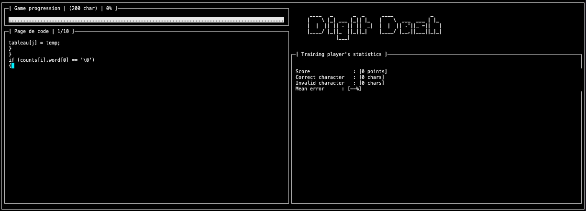
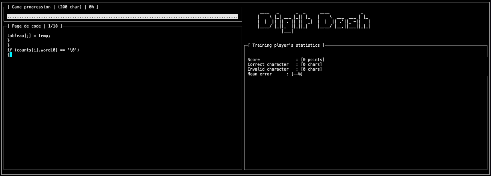
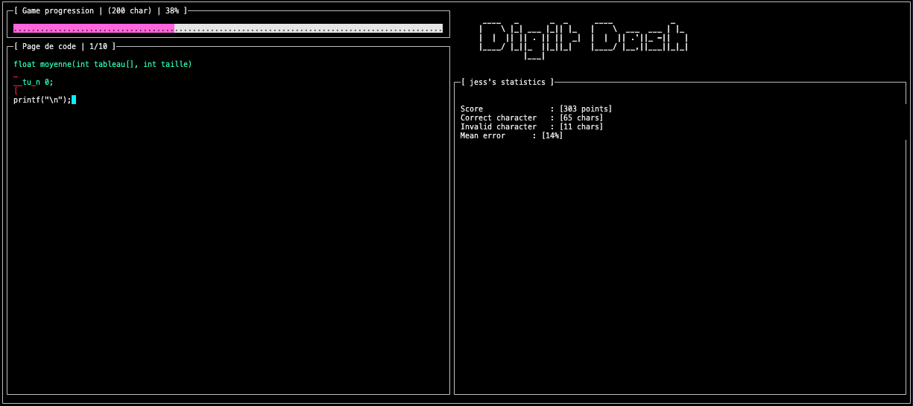
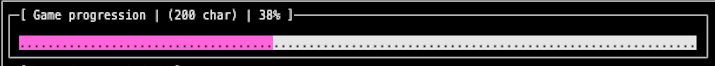
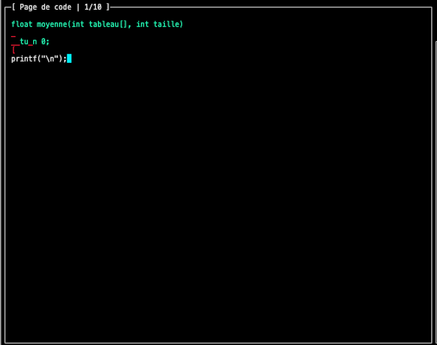
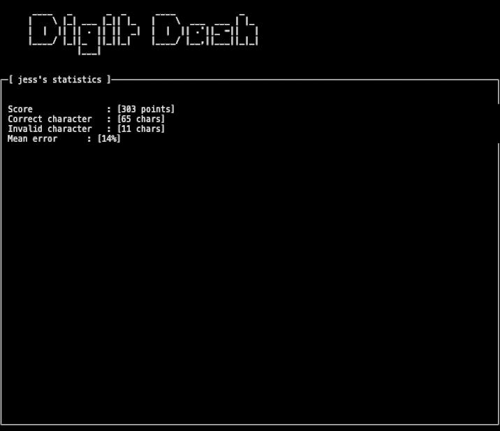

Le jeu
Le jeu
Les joueurs devront taper les commandes le plus rapidement et avec la plus grande précision possible. Le joueur qui tape les commandes le plus rapidement et avec la plus grande précision remporte la partie.
Un jeu dynamique
Nous avons développé un affichage dynamique et interactif pour notre jeu. Cet affichage est composé de plusieurs cadres, chacun ser- vant à afficher des éléments spécifiques.
Il est important de suivre son avancé
En haut de l’écran, nous avons placé un cadre qui affiche une barre de progression du jeu. Cette barre de progression permet aux joueurs de visualiser visuellement l’avancement de leur partie. Elle se met à jour en temps réel, offrant ainsi une indication claire de la progression et de l’état actuel du jeu.
Attention pas ne faites pas d'erreur
Juste en dessous, nous avons ajouté un autre cadre qui contient le code que le joueur doit écrire. Ce code s’affiche au fur et à mesure de la progression du jeu. Les joueurs doivent interagir avec ce cadre en écrivant le code approprié pour progresser dans le jeu. Grâce à ncurses, nous avons pu rendre ce cadre interactif, permettant aux joueurs de saisir leur code directement à partir du clavier.
Tes stats à porter de mains
En dessous du nom du jeu, nous avons placé un cadre qui affiche les statistiques du joueur en temps réel. Ces statistiques peuvent in- clure des informations telles que le score, le temps écoulé, le nombre d’ennemis vaincus, etc. Grâce à la flexibilité de ncurses, nous avons pu actualiser ces statistiques en temps réel pour refléter les actions du joueur pendant le jeu.